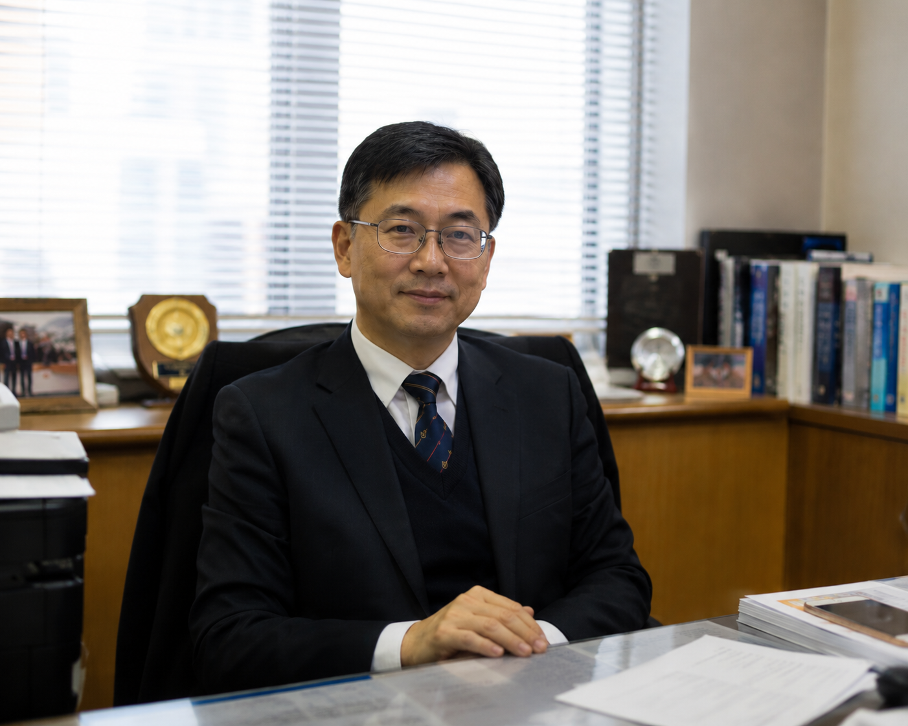

🏉
Inter-School Sevens: Girls’ Rugby Champions
Our senior girls’ side lifted the Inter-School Sevens trophy after an unbeaten run, capping a season of remarkable team chemistry.
Read moreCognitio Lutheran Secondary School is the official school website of 文理路德中學, a Christian secondary school in Pak Tam Chung, Sai Kung, Hong Kong, sharing admissions, academics, school news, and contact information.
From scripture to STEM, from chamber music to cross-country trails, every Cognitio student grows along four lines that have guided this school since 1960.
Grounded in the Lutheran tradition, with daily reflection, chapel, and service that translate belief into action.
HKDSE excellence with bilingual fluency, STEM enrichment, humanities depth, and university-bound mentorship.
Outdoor learning in Sai Kung Country Park, the arts, athletics, and global service shape the whole student.
Exchange programmes, model UN, and partnerships across Asia equip students for an interconnected world.

Dr. M. KwokFor more than six decades, Cognitio Lutheran Secondary School has stood beside the Wisdom Valley as a place of formation. We are not in the business of producing scores — we are in the business of forming people.
Every student who walks through our doors is met with the same conviction: that learning is sacred work, and that knowledge without character is only half an education.
Whether your child arrives drawn to mathematics, music, marine biology, or moral philosophy, our promise is the same — they will leave us with a sharper mind, a steadier conscience, and a wider horizon.
— Dr. M. Kwok, Principal
From rugby pitches to inventors’ exhibitions, our students earn their reputations the old-fashioned way.
Our senior girls’ side lifted the Inter-School Sevens trophy after an unbeaten run, capping a season of remarkable team chemistry.
Read moreApplications are now open for limited mid-year places in Secondary 2 to Secondary 4. Online registration available.
Read moreOur Junior Police Call team took the top territory-wide title for civic awareness and crisis simulation.
Read moreCognitio students brought home the Young Talent Creativity Award from the 2026 Geneva International Exhibition of Inventions.
Read moreA broad foundation in Chinese, English, mathematics, sciences, and humanities, anchored by Christian Education and outdoor learning.
HKDSE pathways with elective specialisation in sciences, humanities, business, and visual arts. Mentor-led research projects.
Award-winning robotics, design thinking, and an in-school maker studio. Pathway partnerships with Hong Kong universities.
Music, athletics, debate, drama, service, and 40+ student-led clubs that turn skills into character.